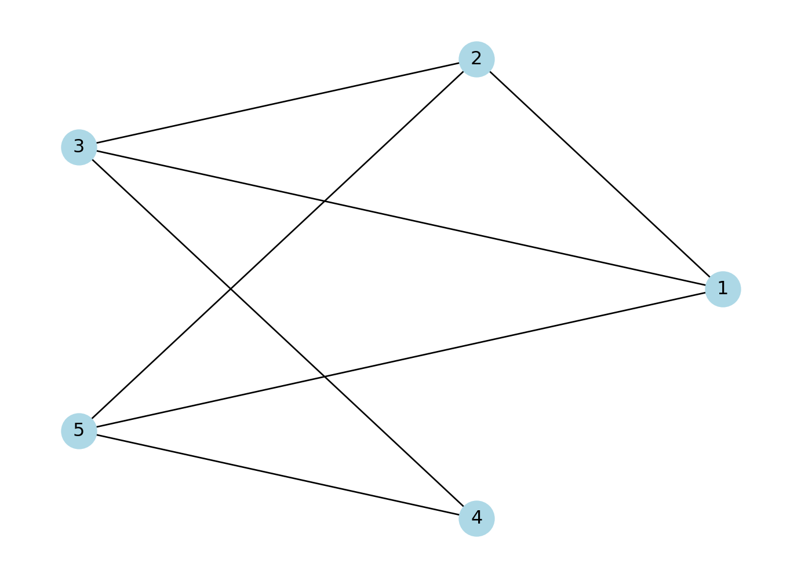
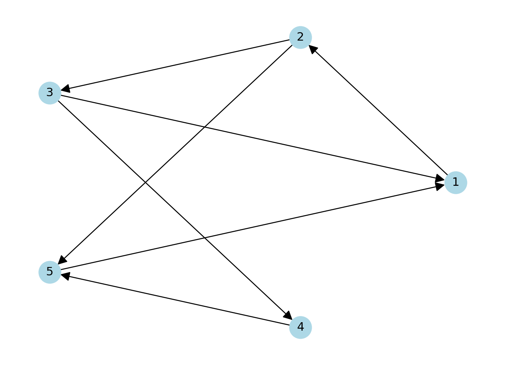
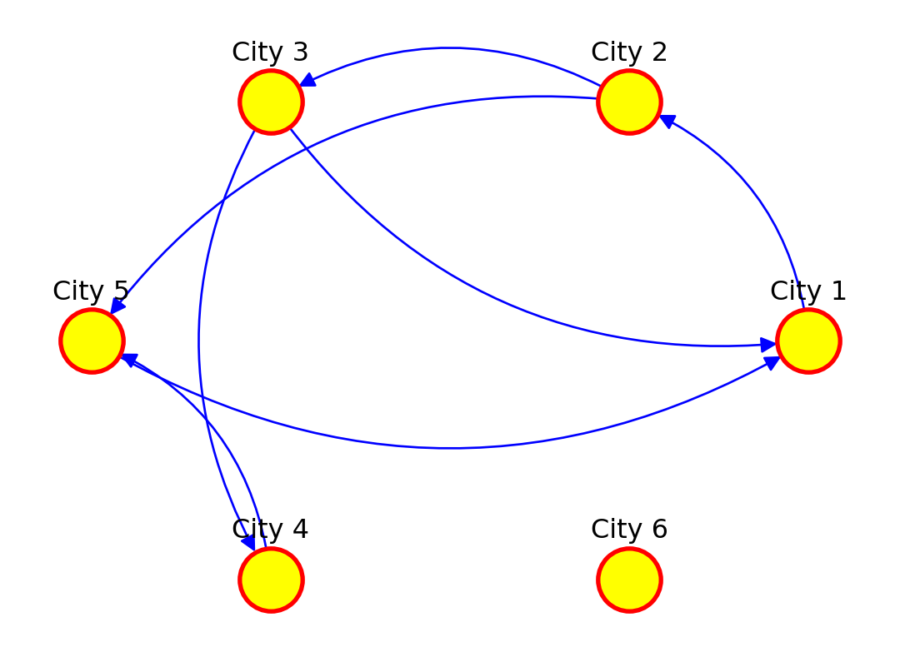
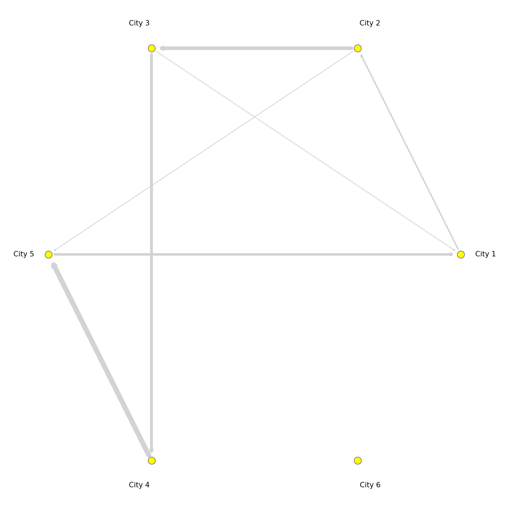
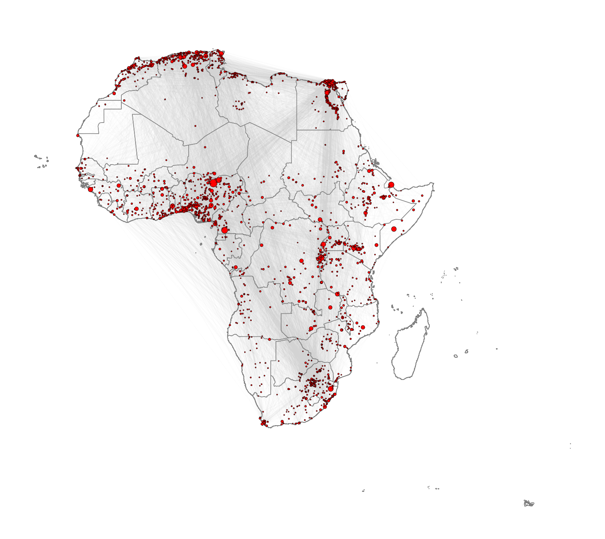
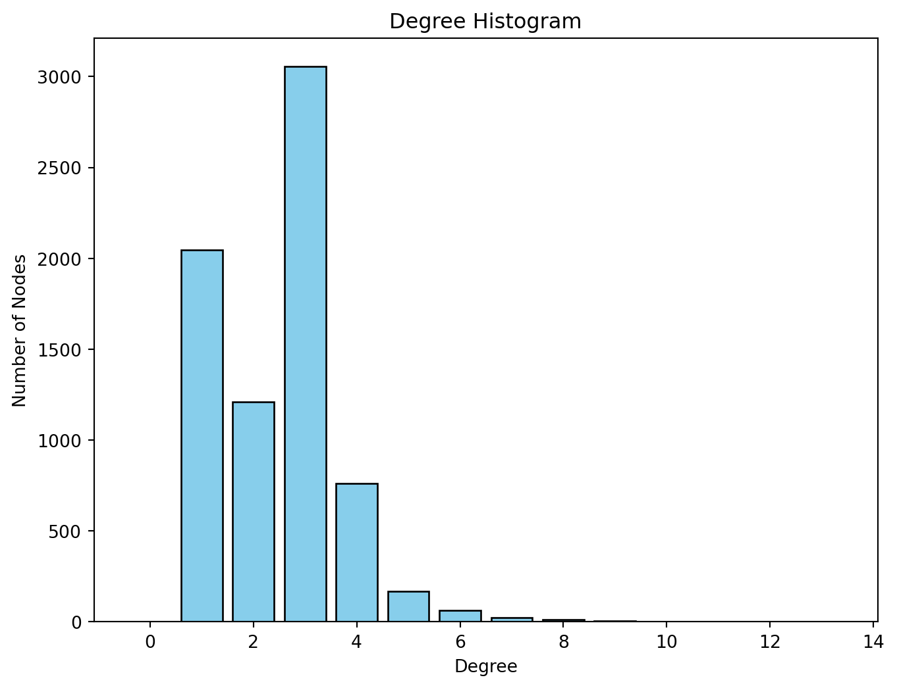
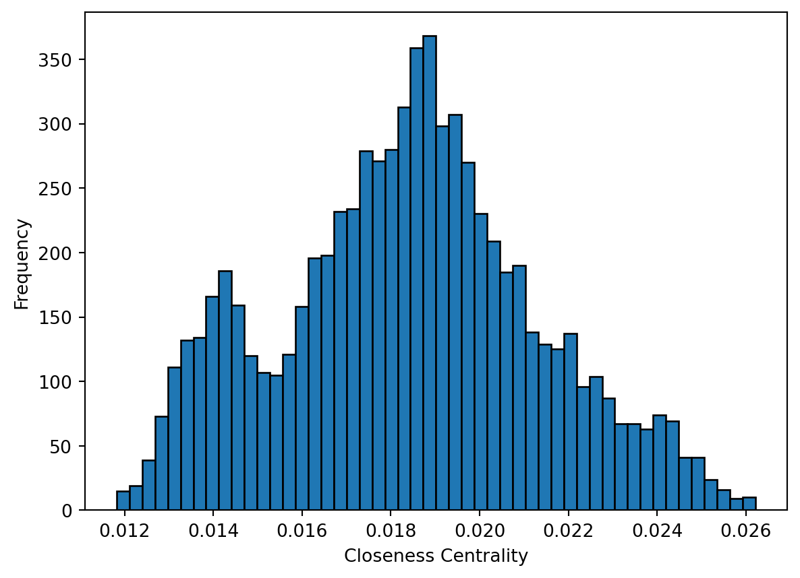
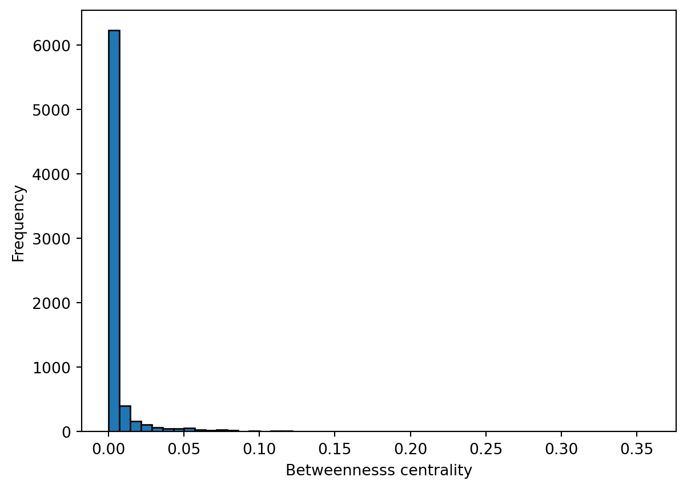
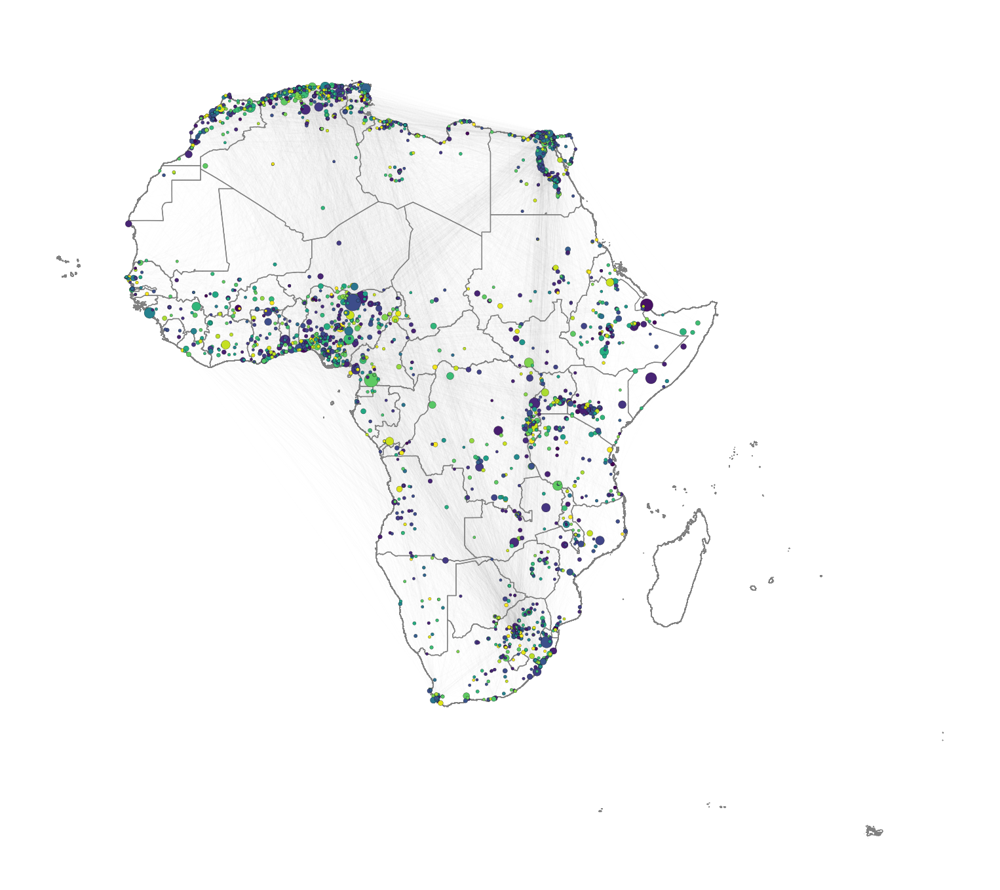

# working with spatial data
import geopandas as gpd
# data manipulation and visualisation
import pandas as pd
import networkx as nx # network manipulation and analysis
import matplotlib.pyplot as plt # Offers enhanced data visualization capabilities
import numpy as np
import igraphLab in Python
We start by loading all the libraries required for this section.
Creating networks
Networks are used as a tool to conceptualise many real-life situations where a group of items display connections among themselves, such as the friendships among members of a school year group, airline flights between cities or hyperlinks between websites. Generally, a network (or a graph) consists of nodes (a.k.a. vertices) and edges (a.k.a. links) which represent the connections between the nodes of the network.
Starting from the basics
To understand the basic concepts and components of a network, we create a small example network using the networkx package. We create an undirected network of 5 nodes and 6 edges.
# Create an undirected graph with 5 nodes and specified edges
network = nx.Graph()
network.add_edges_from([(1, 2), (2, 3), (2, 5), (3, 1), (3, 4), (4, 5), (5, 1)])
# Create a figure and axes explicitly
fig, ax = plt.subplots()
# Draw the graph using a circular layout
pos = nx.circular_layout(network) # Set layout to circular
nx.draw(network, pos, with_labels=True, node_color='lightblue', node_size=500, font_size=12, ax=ax)
# Display the plot
plt.show()
If the connections between the nodes of a network are non-reciprocal, the network is called directed.
# Create a directed graph with 5 nodes and specified edges
network = nx.DiGraph() # DiGraph is used for directed graphs
network.add_edges_from([(1, 2), (2, 3), (2, 5), (3, 1), (3, 4), (4, 5), (5, 1)])
# Create a figure and axes explicitly
fig, ax = plt.subplots()
# Draw the graph using a circular layout
pos = nx.circular_layout(network) # Set layout to circular
nx.draw(network,pos, with_labels=True, node_color='lightblue', node_size=500, font_size=12, arrows=True, arrowsize=20, ax=ax) # Add arrows to indicate direction
# Display the plot
plt.show()
The network can also be defined as a list containing pairs of nodes with labels. In that case we do not need to specify the number of nodes. We only specify the isolated nodes to be included.
Note
We will describe the various arguments within plot which can be used to style your data visualisation
# Create a directed graph and add edges between cities
network_isolated = nx.DiGraph() # Directed graph
edges = [("City 1", "City 2"),
("City 2", "City 3"),
("City 2", "City 5"),
("City 3", "City 1"),
("City 3", "City 4"),
("City 4", "City 5"),
("City 5", "City 1")]
network_isolated.add_edges_from(edges)
# Add the isolated node (without any connections)
network_isolated.add_node("City 6")
# Clear the previous plot (important to avoid overlap)
plt.clf()
# Create a figure and axes explicitly
fig, ax = plt.subplots()
# Draw the graph using a circular layout
pos = nx.circular_layout(network_isolated) # Set layout to circular
# Plot settings
nx.draw(network_isolated, pos,
node_color="yellow", # Node color
node_size=800, # Node size
edge_color="blue", # Edge color
font_size=10, # Font size for labels
font_color="black", # Label color
linewidths=2, # Border thickness
edgecolors="red", # Border color of nodes
arrows=True, # Add arrows for directed edges
arrowsize=15, # Arrow size
connectionstyle='arc3,rad=0.3', # Curve edges
ax=ax)
# Adjust label distance (using annotations for more control)
for node, (x, y) in pos.items():
plt.text(x, y + 0.15, node, fontsize=12, color="black", ha='center')
# Display the plot
plt.show()<Figure size 672x480 with 0 Axes>
Adding attributes
We can add attributes to individual components of the network. To add attributes to nodes, we need to access them:
list(network_isolated.nodes)['City 1', 'City 2', 'City 3', 'City 5', 'City 4', 'City 6']Additional node attributes can be added through the function set_node_attributes(), which requires a network object, a dictionary keyed by node to an attribute value such as population size, and the name of the attribute:
populations = {'City 1': 92000, 'City 2': 549000, 'City 3': 1786000, 'City 4': 74000, 'City 5': 8000, 'City 6': 21000}
nx.set_node_attributes(network_isolated, populations, "population")and accessed:
nx.get_node_attributes(network_isolated, "population"){'City 1': 92000,
'City 2': 549000,
'City 3': 1786000,
'City 5': 8000,
'City 4': 74000,
'City 6': 21000}or via
list(next(iter(network_isolated.nodes(data=True)))[1].keys())['population']for the names of these attributes.
Dictionaries are data structures commonly used in python which allow to map a set of keys with values, like cities with their respective populations. Dictionaries can be defined as we did for the variable populations or in a faster way via what is known as a dictionary comprehension, which comes handy if we have the keys and the values stored as a list:
cities = list(network_isolated.nodes)
city_populations = [92000, 549000, 1786000, 74000, 8000, 21000]
populations = {cities[i]: city_populations[i] for i in range(len(cities))}
populations{'City 1': 92000,
'City 2': 549000,
'City 3': 1786000,
'City 5': 74000,
'City 4': 8000,
'City 6': 21000}For more information on dictionaries, please check the python documentation, for example at https://docs.python.org/.
We can also access the edges:
edges = list(network_isolated.edges())We can add edge attributes, such as the number of people moving from an origin to a destination city. We call this attribute edge weight. The size of the connection between two places often represent their importance or weight in the network.
weight_edges = [2000, 5000, 1000, 1000, 4000, 3500, 7000]
weight = {edges[i]: weight_edges[i] for i in range(len(edges))}
nx.set_edge_attributes(network_isolated, weight, "weight")The edges attributes can be accessed via:
nx.get_edge_attributes(network_isolated, "weight"){('City 1', 'City 2'): 2000,
('City 2', 'City 3'): 5000,
('City 2', 'City 5'): 1000,
('City 3', 'City 1'): 1000,
('City 3', 'City 4'): 4000,
('City 5', 'City 1'): 3500,
('City 4', 'City 5'): 7000}or for the names of these attributes:
list(next(iter(network_isolated.edges(data=True)))[2].keys())['weight']We can examine the adjacency matrix of the network. The adjacency represents the presence of edges between different pairs of nodes. In our example, each row corresponds to an origin city and each column to a destination:
# Get the adjacency matrix as a sparse matrix
adj_matrix = nx.adjacency_matrix(network_isolated).toarray()
adj_matrix/var/folders/79/65l52xsj7vq_4_t_l6k5bl2c0000gn/T/ipykernel_14085/2990130939.py:2: FutureWarning:
adjacency_matrix will return a scipy.sparse array instead of a matrix in Networkx 3.0.
array([[ 0, 2000, 0, 0, 0, 0],
[ 0, 0, 5000, 1000, 0, 0],
[1000, 0, 0, 0, 4000, 0],
[3500, 0, 0, 0, 0, 0],
[ 0, 0, 0, 7000, 0, 0],
[ 0, 0, 0, 0, 0, 0]])We can also look at the existing node and edge attributes.
network_isolated.nodes(data=True)NodeDataView({'City 1': {'population': 92000}, 'City 2': {'population': 549000}, 'City 3': {'population': 1786000}, 'City 5': {'population': 8000}, 'City 4': {'population': 74000}, 'City 6': {'population': 21000}})network_isolated.edges(data=True)OutEdgeDataView([('City 1', 'City 2', {'weight': 2000}), ('City 2', 'City 3', {'weight': 5000}), ('City 2', 'City 5', {'weight': 1000}), ('City 3', 'City 1', {'weight': 1000}), ('City 3', 'City 4', {'weight': 4000}), ('City 5', 'City 1', {'weight': 3500}), ('City 4', 'City 5', {'weight': 7000})])Basic visualisation
You have already seen how we can visualise networks using the base R function plot(). We will now elaborate on how individual components of the network can be visually adjusted using specific parameters in the plot function. More sophisticated data visualisations can be produced integrating geographic information, see Chapter 5 in Rowe, Cabrera-Arnau, and Piestrostefani (2023), or using other packages such as ggraph in conjunction with ggplot2.
# Assuming `network_isolated` is a NetworkX graph object
# Create a circular layout similar to layout.circle in R
pos = nx.circular_layout(network_isolated)
# Create a figure and axes explicitly
fig, ax = plt.subplots()
# Draw the network nodes
nx.draw_networkx_nodes(
network_isolated, pos,
node_color='yellow',
node_size=100,
edgecolors='gray',
ax=ax
)
edge_width = [d['weight'] / 1000 for u, v, d in network_isolated.edges(data=True)]
# Draw the network edges with arrows
nx.draw_networkx_edges(
network_isolated, pos,
edge_color='lightgray',
width=edge_width,
arrows=True,
arrowstyle='-|>',
arrowsize=5,
ax=ax
)
# Function to offset labels (moves labels further from the nodes)
def offset_label_pos(pos, dist):
pos_labels = {}
for node, (x, y) in pos.items():
angle = np.arctan2(y, x) # Get angle of node from center
# Offset by moving label along this angle
pos_labels[node] = (x + dist * np.cos(angle), y + dist * np.sin(angle))
return pos_labels
# Apply the offset function to shift labels away from nodes
pos_labels = offset_label_pos(pos, 0.12)
# Draw node labels
nx.draw_networkx_labels(
network_isolated, pos_labels,
font_size=10,
font_color='black',
ax=ax
)
# Set limits and display the plot
plt.axis('off')
plt.tight_layout()
plt.show()
Spatial networks from data
So far in this computational notebook we have seen how to create networks with the networkx package with no input data. However, one of the most powerful features of the package is that it allows to easily create networks based on dataframes with information about the nodes and edges. Here, we work with a network of African roads constructed by considering all continental cities with more than 100,000 inhabitants as the nodes, obtained from (Moriconi-Ebrard, Harre, and Heinrigs 2016). The edges of the network were created based on the road infrastructure from OpenStreetMap (“Openstreetmap.org”), using all primary roads, highways and trunk roads. Each edge was constructed by measuring the physical distance of consecutive points that describe the intricate patterns of the roads. Thus, a reasonably good estimate of its road length is available for each edge. Additional nodes besides cities are needed to describe the road infrastructure, such as some road intersections. These nodes are labelled as “transport nodes” and help define possible routes between cities. Some transport nodes correspond to towns with less than 100,000 inhabitants, so they are labelled as attached to nearby cities. The urban network enables us to consider the existing roads in the continent and measure the travelling distance rather than the physical distance between cities. The constructed network is formed by 7,361 nodes (2,162 cities and 5,199 transport nodes) and 9,159 edges. For more details on how the network was built, see (Prieto-Curiel et al. 2022).
The network is connected, meaning that it is possible to find a sequence of nodes and existing roads linking any pair of cities, and therefore, it is also possible to find the shortest road distance between any two cities and define it as the network distance. The network consists of 361,000 km of road infrastructure and connects 461 million people living in African cities, representing roughly 39% of the continent’s population (Prieto Curiel, Cabrera-Arnau, and Bishop 2022).
Creating a network from a data frame
The data that specifies the nodes and edges of the African road network is stored in two csv files, one for nodes and one for edges. This data can be loaded in two data frames:
# Read the CSV file containing network nodes data
df_nodes = pd.read_csv("./data/Africa/AfricaNetworkNodes.csv", encoding='ISO-8859-1')
df_edges = pd.read_csv("./data/Africa/AfricaNetworkEdges.csv", encoding='ISO-8859-1')We can then create an undirected graph as an igraph object from the data frames corresponding to the nodes and edges:
# Create an undirected graph from the edge DataFrame
g_africa = nx.from_pandas_edgelist(df_edges, source='from', target='to', edge_attr=True, create_using=nx.Graph())
# Add node attributes from df_nodes DataFrame
node_attr_dict = df_nodes.set_index('Agglomeration_ID').to_dict('index')
nx.set_node_attributes(g_africa, node_attr_dict)We can have a look at the names of the vertex attributes, which are automatically taken from the columns in the df_nodes data frame:
# Retrieve the attribute names associated with vertices in the 'g_africa' graph
list(next(iter(g_africa.nodes(data=True)))[1].keys())['agglosName', 'x', 'y', 'Pop2015', 'ISO3', 'Region', 'Between', 'degree']where “name” is the ID of each node in the network, “agglosName” is the name of the city represented by the node, it is set to “road” if the node is a transport node. “x” and “y” represent the coordinates of each node, “Pop2015” is the population of the city nodes, “ISO3” is the code for the country that each node is situated in, “Region” represents the region within the African continent that each node is situated in, and “Between” and “degree” represent the betweenness centrality and the degree of each node in the network, which we will also compute below.
We can also obtain the names of the edge attributes, which are taken from the columns in the df_edges data frame:
# Retrieve the attribute names associated with edges in the 'g_africa' graph
list(next(iter(g_africa.edges(data=True)))[2].keys())['l', 'h', 'time', 'timeU', 'timeUCB', 'border']where “l” represents the length in kilometres by road segment and it considers curves, “h” is the type of edge (primary, highway, etc.), “time” is the estimated minutes to travel through the edge, considering different speeds for distinc types of road, “timeU” is also the estimated minutes to travel through the edge, but allowing extra time if the extrema of the edge are urban nodes, “timeUCB” allows extra time for edges that cross a border, “border” is a binary variable taking value 1 is it crosses a border and 0 otherwise and “added” is also a binary variable taking value 1 if an edge was artificially added to ensure the connectedness of the network and 0 otherwise.
Visualising the African road network as a spatial network
What does the African road network that we just built look like? We can find out very easily using the plot function. But in order to achieve a nice-looking graph, we need to play a bit with the values of the arguments of this function. For example, we will plot the size of the nodes according to the population of the cities that they represent. But some cities are orders of magnitude larger than others, which would result in some gigantic nodes for a few cities and tiny ones for the majority. In order to weaken this effect, we first apply a scaling function that redefines the size of the nodes:
# Calculate and assign a 'size' attribute to vertices in the 'g_africa' graph
# The size is determined based on the population data ('Pop2015') of each vertex
node_size = 0.5*(df_nodes['Pop2015']/10000)**0.6
# Create a dictionary mapping node IDs to their calculated sizes
size_dict = dict(zip(df_nodes['Agglomeration_ID'], node_size))
nx.set_node_attributes(g_africa, size_dict, "size")Now we are ready to plot the network, with a few extra modifications to the default plot in order to improve the appearance. As an exercise, you may want to try to plot the default visualisation. If you do this, you will understand better why it is worth it spending some time playing with the values of the parameters in the plot function.
We will include the outline of the African countries in the background. To do this, we upload the necessary data:
df_borders = gpd.read_file("./data/Africa/Africa_Boundaries.geojson") # Read GeoJSON file containing Africa boundaries into a data frameWe set the layout (lo) of the nodes in the network according to the x and y columns in df_nodes:
coordinates = np.column_stack((df_nodes['x'], df_nodes['y']))We can now plot the background map with the country outlines as well as the network. Running the cell below might take some time depending on the processign power of your computer.
# Create a plot for the geographic boundaries
fig, ax = plt.subplots(figsize=(10, 10))
df_borders.boundary.plot(ax=ax, color='gray', linewidth=0.5) # Plotting the boundaries
# # Plotting the graph overlay
positions = dict(zip(g_africa.nodes, coordinates)) # pos must be given to nx.draw() as a dictionary where keys are nodes and values are coordinates
nx.draw_networkx_nodes(g_africa,
pos = positions,
ax=ax,
node_size = node_size,
edgecolors='black',
linewidths=0.3,
node_color='red')
g_africa.remove_edges_from(nx.selfloop_edges(g_africa))
nx.draw_networkx_edges(g_africa,
pos = positions,
width=0.5,
edge_color = 'lightgray',
alpha = 0.05,
ax=ax)
# Adjust the plot's appearance
plt.axis('off') # Turn off the axis
plt.show() # Show the plot
Note that you might be able to achieve better visualisations using the package igraph for Python. While we demonstrate the use of networkx here due to its ease of use, igraph is known for handling large graphs more efficiently.
Network metrics
The following metrics can help us obtain further insights into the network structure. They are also valuable as a way to characterise the network so it can later be compared to other networks or to itself through time.
Density
The density of a network refers to the proportion of existing edges over all possible edges. In a network with \(n\) nodes, the total number of possible edges is \(n \times (n-1)\). A density equal to \(1\) corresponds to a situation where \(n \times (n-1)\) edges are present. A network with no edges at all would have density equal to 0. We can obtain the density of the African network by running the following code:
# Calculate the edge density of the 'g_africa' graph
# Edge density is the ratio of the number of edges to the number of possible edges
# Loops (self-edges) are excluded from the calculation
nx.density(g_africa)0.00033811420943515475The edge density is approximately 0.00034, giving as an indication that the network is quite sparse, since out of all possible edges, only 0.034% are present.
Reciprocity
The reciprocity in a directed network is the proportion of reciprocated connections between nodes (i.e. number of pairs of nodes with edges in both directions) from all the existing edges.
# Calculate the reciprocity of the edges in the 'g_africa' graph
nx.reciprocity(g_africa)0.0The reciprocity of this UNdirected network is naturally 0 by definition.
Degree
The degree of a node is the number of edges connected to it. The in-degree of a node in a directed network is the number of edges ending in a given node. The out-degree is the number of edges starting from a given node. The degree_histogram() function from networkx allows computing the number of nodes with a certain degree (frequency of degree) in the network. In order to visualise the results, we produce a histogram
# Create a plot
fig, ax = plt.subplots()
# Compute frequency of each degree
degree_hist = nx.degree_histogram(g_africa)
# Create the x (degree) and y (frequency) values
degrees = range(len(degree_hist)) # Degree values
frequency = degree_hist # Number of nodes with each degree
ax.bar(degrees, frequency, width=0.80, color='skyblue', edgecolor='black')
ax.set_title("Degree Histogram")
ax.set_xlabel("Degree")
ax.set_ylabel("Number of Nodes")
plt.show()
We observe that most nodes have degree 3. Nodes of degree 1 are terminal nodes. Nodes of degree 2 are relatively less common than those of degree 1 and 3. This is likely due to the method used to build the network, where all the transport nodes of degree 2 are eliminated in order to simplify the network. Beyond degree 4, it is relatively rare to find any nodes. From the histogram, we see the maximum degree observed in the network is 13. Below, we obtain the ID of the node with the maximum degree as well as the value of the degree (13).
# Find the node with the maximum degree
max_degree_node = max(g_africa.degree, key=lambda x: x[1]) # x[0] is the node, x[1] is the degree
print(max_degree_node)(2896, 13)and the name of the node:
# Get the "name" attribute of the node with the maximum degree
max_degree_node_name = g_africa.nodes[max_degree_node[0]]['agglosName']
print(max_degree_node_name)Duduza CentralDistances
A path in a network between node \(A\) and node \(B\) is a sequence of edges joining distinct nodes, starting at node \(A\) and ending at node \(B\). In a directed path all edges follow the same direction.
The path length of a path between nodes \(A\) and \(B\) is generally defined as the number of edges forming this path. The shortest path is the minimum count of edges present to travel from \(A\) to \(B\).
The path length can be defined in alternative ways. For example, the path length can be defined as the sum of the weights of the edges forming a path if the edges are weighted.
We can use the function shortest_path() to find the shortest path between a given pair of nodes. For example, between Cairo and Lagos. We store the output of the shortest path function in a list called path which contains the sequence of nodes in the shortest path.
# Find the corresponding nodes by their name attributes
node_names = {data['agglosName']: node for node, data in g_africa.nodes(data=True)}
start_node = node_names.get("Cairo")
end_node = node_names.get("Lagos")
path = nx.shortest_path(g_africa, source=start_node, target=end_node)We can extract the values of this to obtain the edges, which we then use to compute the total length of the shortest path between the two cities.
path_length = nx.shortest_path_length(g_africa, source=start_node, target=end_node, weight='l')
print(path_length)6084.358746062236We obtain that the shortest path is 6,084.359 km long. You can check for example on Google Maps what the distance by road is between the two cities. What do you obtain? What is the relative error between our estimation and the value from Google Maps?
Of all shortest paths in a network, the longest path length is the network diameter. The diameter of the African road network is the length of the longest shortest path between any pair of nodes:
nx.diameter(g_africa)138The mean distance is the average length of all shortest paths in the network. The mean distance will always be smaller or equal than the diameter. It is given by:
nx.average_shortest_path_length(g_africa)55.86020422703673Centrality
Centrality metrics assign scores to nodes (and sometimes also edges) according to their position within a network. These metrics can be used to identify the most influential nodes. Two important centrality metrics are (1) closeness centrality, and (2) betweenness centrality. Closeness centrality is a measure of the shortest path length between a node and all the other nodes. For a given node, it is computed as the inverse of the average shortest paths between that node and every other node in the network. A node with closeness centrality close to 1 indicates that on average the node is very close to the other nodes in the network. A closeness centrality of 0 represents an isolated node. Below we compute the closeness centrality using unweighted edges and represent the results in a histogram. The distribution looks bimodal (this means that the histogram has two frequency peaks).
# Calculate the closeness centrality for each vertex in the 'g_africa' graph, using unweighted edges
closeness_centrality = nx.closeness_centrality(g_africa)
# Extract the centrality values (we only need the values for the histogram)
centrality_values = list(closeness_centrality.values())
# Create plot
fig, ax = plt.subplots()
# Plot the histogram of closeness centrality
ax.hist(centrality_values, bins=50, edgecolor='black')
ax.set_xlabel('Closeness Centrality')
ax.set_ylabel('Frequency')
plt.show()
Betweenness centrality is a measure of the number of shortest paths going through a node. Nodes with high values of betweenness centrality indicates that they play a very important role in the overall connectivity of the network. Betweenness can also be computed for edges. We also compute the betweenness centrality for all nodes and represent it as a histogram.
# Calculate the betweenness centrality for each vertex in the 'g_africa' graph, using unweighted edges
betweenness_centrality = nx.betweenness_centrality(g_africa)
# Extract the betweenness centrality values (we only need the values for the histogram)
betweenness_values = list(betweenness_centrality.values())
# Plot the histogram of betweenness centrality
fig, ax = plt.subplots()
ax.hist(betweenness_values, bins=50, edgecolor='black')
ax.set_xlabel('Betweennesss centrality')
ax.set_ylabel('Frequency')
plt.show()
Note
How would you interpret the patterns observed in the histograms for closeness centrality and betweenness centrality?
Community detection
Community detection in network theory refers to the process of identifying groups or communities of nodes within a network that exhibit a higher density of connections internally compared to the connections between different groups. The goal is to uncover the underlying structure or organisation within a network by clustering nodes into distinct communities based on the patterns of connections or interactions between them.
There are various algorithms and methods used for community detection, each with its own approach. Here, we use the Louvain method. The Louvain method is a widely used algorithm for detecting communities in large networks by optimising modularity, a measure of how well the network can be divided into groups. It works in two phases: first, it assigns each node to its own community and iteratively moves nodes to neighboring communities to maximise modularity. In the second phase, communities are merged into supernodes, and the process is repeated until no further improvement in modularity can be made. This method is efficient and scalable, making it suitable for large graphs.
We first find the communities and assign each node to the community it belongs to.
# Add weights to the edges (inverse of 'timeUCB')
weights = { (row['from'], row['to']): 1/row['timeUCB'] for idx, row in df_edges.iterrows() }
nx.set_edge_attributes(g_africa, weights, name='weight')
# Perform Louvain community detection using louvain_communities
communities = list(nx.community.louvain_communities(g_africa, weight='weight'))
# Map each node to its community
node_to_community = {}
for community_id, community in enumerate(communities):
for node in community:
node_to_community[node] = community_idThen, we visualise the result by colouring nodes according to the community they belong to.
# Assign node sizes based on population data
node_size = [1.3 * (g_africa.nodes[node].get('Pop2015', 0) / 10000) ** 0.55 for node in g_africa.nodes]
# Assign colors based on community membership
node_color = [node_to_community[node] for node in g_africa.nodes]
# Plotthe geographic boundaries (replace df_borders with your actual geographic data)
fig, ax = plt.subplots(figsize=(10, 10))
df_borders.boundary.plot(ax=ax, color='gray', linewidth=0.5)
draw_nodes=nx.draw_networkx_nodes(g_africa,
pos = positions,
ax=ax,
node_size = node_size,
edgecolors='black',
linewidths=0.1,
node_color=node_color)
g_africa.remove_edges_from(nx.selfloop_edges(g_africa))
draw_edges=nx.draw_networkx_edges(g_africa,
edgelist = g_africa.edges,
pos = positions,
width=0.3,
edge_color = 'gray',
alpha = 0.01,
ax=ax)
# Adjust the plot's appearance
plt.axis('off') # Turn off axis
plt.show()
While other community detection algorithms are available, the Louvain method is particularly suitable for large graphs. Other options are walktrap, Girvan-Newman, spectral clusterint, etc. For an overview, you can check (Fortunato 2010).